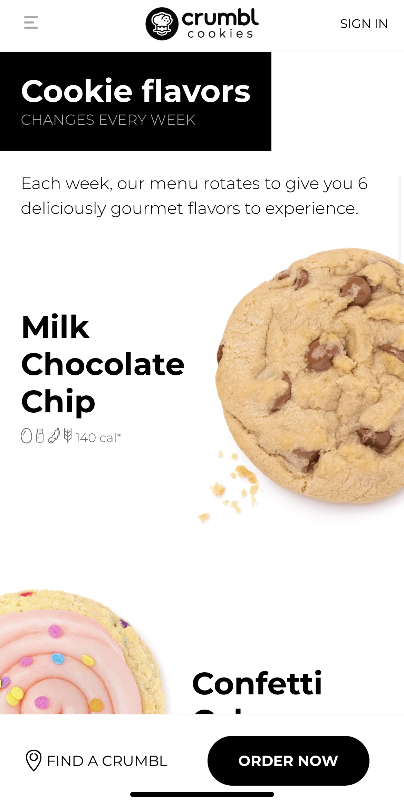
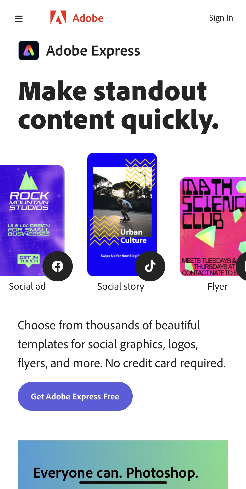
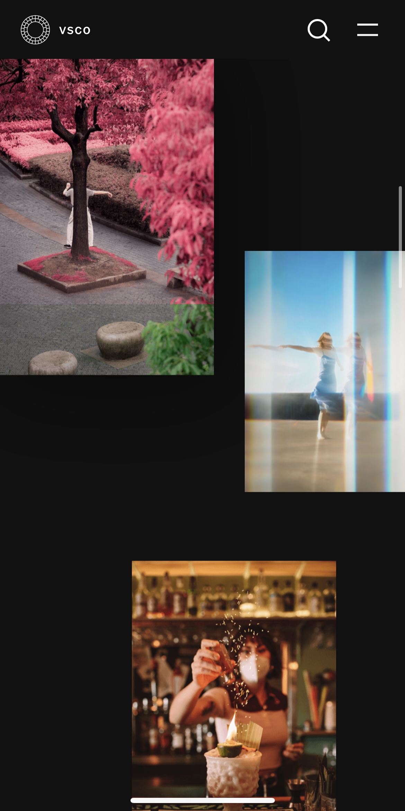

Design Principles Document
Ella Chamberlain
Rule of Thirds
Crumbl Cookies
The Crumbl Cookies website displays the rule of thirds well by having the focal points of the cookies and the titles being in the on one side of a grid. This makes for a more pleasing and interesting layout.
Contrast
Adobe
The Adobe website uses bright contrasting colors well to make their colors pop. With a white background, it helps to make the colors pop even more.
Color
VSCO
VSCO lays out different photos using the rule of thirds well, but they also use color to make a cool website. Each picture uses a different color theme to show off the different photos on their website.